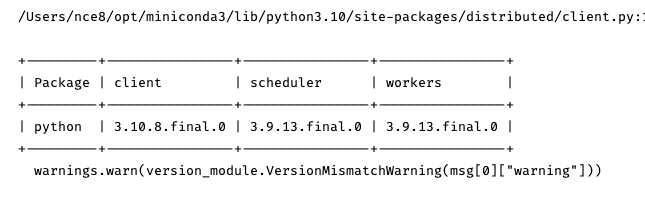

Starting a Cloud Dask Cluster¶
There are number of different tools available for running a dask cluster on the cloud.
Coiled.io¶
The easiest way to get a dask cluster on the cloud, in my view, is through a service called coiled.io. It’s a private company that was actually created by the folks who wrote dask precisely with the goal of making it easier to start dask cloud clusters. Basically just created an account at coiled.io, and install their conda package, run their setup wizard from the command line to link your cloud account with AWS or Google Cloud, and you’re all set. This is occasionally a little buggy (nothing worse than managing the admin side of cloud services, is there?!), but pretty smooth.
Then all you have to do is open a notebook you’re off to the races!
[1]:
from coiled import Cluster
from dask.distributed import Client
# create a remote Dask cluster with Coiled
cluster = Cluster(name="nick_plays_with_coiled", software="coiled/default-py39")
# interact with bCoiled using the Dask distributed client
client = Client(cluster)
# link to Dask Dashboard
print("Dask Dashboard:", client.dashboard_link)
Dask Dashboard: http://34.139.118.93:8787
/Users/nce8/opt/miniconda3/lib/python3.10/site-packages/distributed/client.py:1274: VersionMismatchWarning: Mismatched versions found
+---------+----------------+----------------+----------------+
| Package | client | scheduler | workers |
+---------+----------------+----------------+----------------+
| python | 3.10.8.final.0 | 3.9.13.final.0 | 3.9.13.final.0 |
+---------+----------------+----------------+----------------+
warnings.warn(version_module.VersionMismatchWarning(msg[0]["warning"]))
2022-11-30 14:33:01,356 - distributed.client - ERROR - Failed to reconnect to scheduler after 30.00 seconds, closing client
2022-11-30 14:35:13,608 - distributed.deploy.cluster - WARNING - Failed to sync cluster info multiple times - perhaps there's a connection issue? Error:
Traceback (most recent call last):
File "/Users/nce8/opt/miniconda3/lib/python3.10/site-packages/distributed/comm/tcp.py", line 439, in connect
File "/Users/nce8/opt/miniconda3/lib/python3.10/site-packages/tornado/tcpclient.py", line 275, in connect
af, addr, stream = await connector.start(connect_timeout=timeout)
asyncio.exceptions.CancelledError
During handling of the above exception, another exception occurred:
Traceback (most recent call last):
File "/Users/nce8/opt/miniconda3/lib/python3.10/asyncio/tasks.py", line 456, in wait_for
return fut.result()
asyncio.exceptions.CancelledError
The above exception was the direct cause of the following exception:
Traceback (most recent call last):
File "/Users/nce8/opt/miniconda3/lib/python3.10/site-packages/distributed/comm/core.py", line 289, in connect
File "/Users/nce8/opt/miniconda3/lib/python3.10/asyncio/tasks.py", line 458, in wait_for
raise exceptions.TimeoutError() from exc
asyncio.exceptions.TimeoutError
The above exception was the direct cause of the following exception:
Traceback (most recent call last):
File "/Users/nce8/opt/miniconda3/lib/python3.10/site-packages/distributed/deploy/cluster.py", line 132, in _sync_cluster_info
File "/Users/nce8/opt/miniconda3/lib/python3.10/site-packages/distributed/core.py", line 901, in send_recv_from_rpc
File "/Users/nce8/opt/miniconda3/lib/python3.10/site-packages/distributed/core.py", line 858, in live_comm
File "/Users/nce8/opt/miniconda3/lib/python3.10/site-packages/distributed/comm/core.py", line 315, in connect
OSError: Timed out trying to connect to tls://34.139.118.93:8786 after 30 s
WARNING:root:error sending AWS credentials to cluster: Timed out trying to connect to tls://34.139.118.93:8786 after 30 s
(You can also see this detailed here!)
Because dask uses internet protocol for moving data around, you can write and execute code on your own computer, and that code will run on your cloud cluster right up to the moment you ask for a result, at which time that will be delivered locally. So you can load huge datasets off of S3 storage, crunch them, and the final result will appear in the running notebook session on your own computer.
It’s pretty amazing, honestly.
And coiled.io can help you setup the software environments on workers, which is HUGELY helpful!
Coiled.io Costs¶
What’s it cost? Well all the usual cloud fees will apply from your cloud provider, but coiled.io itself is free for the first 10,000 CPU hours a month, then 5 cents per CPU hour after that.
So for most users: it’s free. :)
dask_cloudprovider Package¶
You can also just use the dask_cloudprovider package to directly setup a cloud instance. It has support for AWS, GCP, Azure, DigitalOcean, Hetzner. It’s a great set of tools, but you have to do a little more of the cloud admin then you do with coiled.
High Performance Compute Clusters (PBS, SLURM, etc.)¶
Most universities and even some companies manage their own local compute clusters. If that’s you, don’t worry—dask has you covered! Dask-Jobqueue provides tools for deploying jobs on any of these platforms!
A Note on Software Versioning¶
When running dask in the cloud, you may get a warning that looks like this:
That’s just letting you know that the software running on your personal computer is not exactly the same as the version of software running on your cloud workers. This won’t generally be a problem, but occasionally moving information between different versions of software can cause problems, so it’s often worth trying to make sure that you have the same versions everywhere.